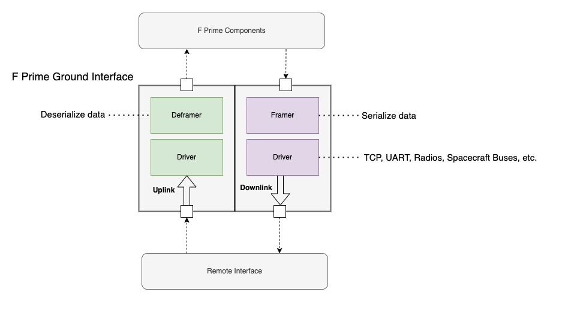

|
F´ Flight Software - C/C++ Documentation devel
A framework for building embedded system applications to NASA flight quality standards.
|
|
F´ Flight Software - C/C++ Documentation devel
A framework for building embedded system applications to NASA flight quality standards.
|
This guide will discuss the F´ ground interface layers and how to customize them. There are two parts to the ground interface: the spacecraft side, and the ground side. This guide will primarily focus on the spacecraft side adaptation as the most common pattern is to adapt F´ flight software for some other ground system (e.g. Cosmos, OpenMCT, etc). This document will walk through common adaptations in hopes that projects will not need to replace the ground interface entirely.
In the most basic form, the F´ ground system pattern consists of two sides: uplink and downlink. These two sides each have two layers: framing and driver. Uplink handles data coming from the remote side of the interface, downlink handles data going to the remote interface, framing handles serializing and deserializing data to and from byte buffers, and the driver layer handles writing data to and from the hardware.

Also of note is the framing protocol, which breaks out the handling of the byte serialization for quick adaptation. Each of these stages need to allocate memory and thus users should also consult the buffer management guide.
!!! note in this guide we will refer to the driver layer but many projects will refer to it as the radio or communication layer. The function of this layer is to read and write bytes to some hardware and the nature of that hardware is irrelevant as long as it can send and receive bytes.
Standard F´ components handle two types of data: com buffers and raw buffers. Com buffers transmit standard F´ items (e.g. events, telemetry, and commands) whereas raw buffers (Fw::Buffer) transmit any raw bytes like file data. Thus the F´ ground interface must handle both types of data. Communications hardware typically only transmits bytes of data and knows nothing about the nature of that data. The goal of the ground interfaces is to ensure that the various types of F´ data can be translated into a sequence of bytes that can be reconstructed on the other side of the interface. This architecture is described below.
Drivers manage hardware communications. These can be simple hardware interfaces (e.g. TCP or UART) or far more complex constructs (e.g. radios, spacecraft buses). From the perspective of F´, the driver has two functions: provide incoming data and handle outgoing data.
!!! note typically projects use a single driver to handle both input and output, however; two drivers may be used to if differing behavior is needed for uplink and downlink.(e.g. UDP downlink for speed and Tcp uplink reliability).
All drivers implement an input port receiving data from the framer. The driver should write input data to the hardware the driver manages. Drivers implement at least one of two methods to retrieve data from hardware: an input port to poll for available data and an output read port for asynchronous data, which often is supported by a read thread. Generic drivers implement both such that they can be used in a threaded context or rate group-driven polling context. The driver is responsible for reading the data from the hardware in either context.
!!! note the F´ uplink layer is compatible with both polling and receiving drivers as described in Uplink below.
Sending Data
To send data to a driver, an Fw::Buffer is passed to the driver's send input port and the data wrapped by the buffer will be pushed out to the hardware. Drivers respond to sends with one of the following statuses:
Polling Data
Polling for data allows the system to determine when to look for available data. This often means the driver does not need a thread constantly trying to read data. It is used in rate-group-driven baremetal systems to schedule the reception of data and remove the need for a task to spin looking for data. To poll data, an Fw::Buffer is passed to the driver's poll input port where the buffer is filled with available data. Polling returns the following statuses:
Receiving Data
Receiving data is to handle asynchronous input of data without the need to poll for it. This typically means the driver has an internal task that calls the receive output port when data has been received. Receive ports are passed Fw::Buffers and a receive status as described below. Receive RETRY status is not used as the external system has nothing to retry.
Uplink handles received data, unpacks F´ data types, and routes these to the greater F´ system. In a typical formation, these com buffers are sent to the command dispatcher and raw buffers are sent to the file uplink. Uplink is implemented with the Svc.Deframer component. This component may be rate group driven in which case it polls for data or it may be driven by a driver's receive output port in which case it handles the data on that incoming port call. Svc.Deframer implements the DeframingProtocolInterface.
Svc.Deframer unpacks F´ data from the supplied buffer using a Svc::DeframingProtocol, which calls back through the DeframingProtocolInterface to send deframed packets out to F´ components.
Internally, Svc.Deframer uses a circular buffer to store incoming data such that messages are not required to be complete. This buffer is updated with the latest data and then processed for messages on each poll or receiving of data.
Downlink takes in F´ data and wraps the data with bytes supporting the necessary protocol. This assembled data is then sent to the driver for handling. Downlink is implemented with the Svc.Framer component, which implements the FramingProtocolInterface.
Svc.Framer packs F´ data using a Svc::FramingProtocol, which calls back through the FramingProtocolInterface to send framed packets out to the driver.
To add a custom wire protocol an implementation needs to be written for two interfaces (virtual base classes). These are Svc::FramingProtocol and Svc::DeframingProtocol.
Svc::FramingProtocol implementors need to implement one function: frame, taking in a pointer to the data to frame, the size of the data, and a packet type for the data. The base class supplies a FramingProtocolInterface member variable, m_interface, that allows implementors to call out for allocating data and sending the newly framed data. A minimal implementation is:
Here the protocol starts a frame with 0xdeadbeef, followed by the data size, and then the data.
Svc::DeframingProtocol implementors need to implement one function: deframe, taking in a circular buffer supplying data, filling the needed variable, and returning a status. The base class supplies a DeframingProtocolInterface member variable, m_interface, that allows implementors to call out for allocating data and routing the deframed data. A minimal implementation is:
Here the protocol starts a frame with 0xdeadbeef and uses size to extra the data. Deframing is typically the inverse of the framing protocol as seen in this example.
!!! note implementors should always use peak to get data and never rotate it, as Svc.Deframer will rotate the buffer based on the status.
To be compatible with this ground interface, a driver must implement the byte steam model interface. The driver may add any other ports, events, telemetry, or other F´ constructs as needed but it must define the ports as described in the ByteStreamDriverModel. These ports are called out in the below FPP snippet.
Fw::Buffer to send data.Fw::Buffer to provide data.Fw::Buffer and return a PollStatus to provide data.